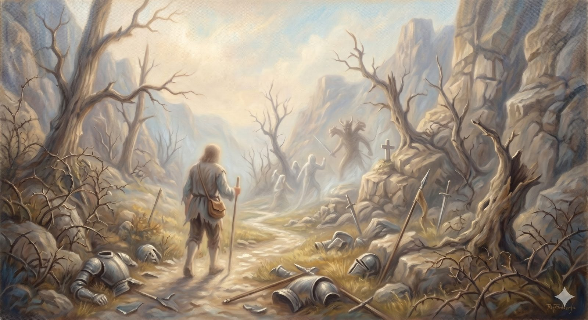

The Valley of Humiliation
The descent where the dragon gives battle — spiritual warfare, the accuser's voice, and division as his favorite weapon.
"Be sober-minded; be watchful. Your adversary the devil prowls around like a roaring lion, seeking someone to devour." 1 Peter 5:8 (ESV)
The descent from the Palace is into a low place called the Valley of Humiliation, and the pilgrim has not gone far before he meets something terrible coming across the field toward him: Apollyon, a monstrous figure who plants himself in the road and forbids Christian to go further. The creature claims him as a subject — you were mine, he says, born in my country — and when Christian insists he now serves another King, the dragon gives battle. It is the first real fight of the journey, and it is worth asking honestly what kind of fight it is.
Because this is the place the road speaks plainly about an enemy. Many modern people find that awkward, and the awkwardness cuts both ways: some imagine a cartoon devil with a pitchfork, and some, embarrassed by that, quietly stop believing in any adversary at all. Scripture lets us do neither. It describes a real, intelligent enemy — a deceiver, an accuser, an adversary who prowls — without ever making him God's equal or letting him share the stage with God. The valley is where we learn to take him seriously without taking him as large as he pretends to be.
Part OneAn accuser, not an equal
First, the proportions, because getting them wrong is itself one of his tactics. The enemy Scripture describes is a creature — fallen, powerful, but made, and already defeated at the Cross you passed on the way here. He is not a second god, not the dark half of a balanced universe. The Christian faith is not a story about two equal powers locked forever; it is a story about a King who has already won, mopping up a defeated rebellion. Apollyon is loud, and his threats are real, but he fights from a position that has already lost. Hold that, and half his power evaporates.
His names tell you his trade. He is the father of lies — so his first weapon is deception, getting you to believe something false about God, about yourself, about your standing. He is the accuser — so his second weapon is condemnation, the voice that agrees you are guilty and insists you are therefore finished. Notice that this is precisely the voice we named back in the Slough, the one that sounds like conviction but offers no road home. Recognizing it for what it is — accusation, not the Spirit's correction — is itself a large part of the battle. The accused pilgrim does not answer the charges by protesting his own innocence. He points to the scroll, to the robe, to the Cross. The answer to the accuser is never I am good enough; it is I am covered.
Part TwoHis favorite weapon: division
But the enemy's most effective work in the church almost never looks like a dragon in the road. It looks like a misunderstanding that festers. The night before the Cross, Jesus prayed for one thing for his people with striking intensity — that they would be one, as he and the Father are one, so that the watching world would believe. The enemy heard that prayer, and he has been working against it ever since. If unity is what makes the gospel visible, then division is his sharpest tool.
And division rarely arrives wearing horns. It looks like a reasonable concern that somehow keeps escalating. It looks like two people who both love Scripture arriving at the same passage and walking away each convinced the other cannot really love God. It looks like a grievance nursed in private until it hardens, a tribe formed, a line drawn where the gospel never drew one. He has had two thousand years to study what fractures a family, what makes reconciliation feel like betrayal, what dresses a petty offense in the robes of principle. Taking him seriously as a strategist means watching for his hand precisely there — in the church split, the broken friendship, the cause that somehow requires you to despise a brother. His methods are recognizable enough to name: you can study all of them in the strategist's playbook — the nine tactics of division, and the peacemaker's move against each.
In plain terms
Spiritual warfare, most of the time, is not dramatic. It is the slow work of lies you start to believe and accusations you can't shake — and, in the church, conflict that grows out of all proportion to its cause.
The two best defenses are unglamorous: answer the accuser by pointing to the Cross rather than to your record, and refuse to let a disagreement curdle into contempt for someone Christ died for.
Part ThreeHow the fight is won
Christian's battle with Apollyon is long and bloody, and at one point he is nearly finished — wounded, disarmed, almost pinned. What turns it is not a clever argument or a surge of his own strength. He gets a hand to his sword again and strikes, and the words Bunyan gives him are borrowed straight from Scripture: when I fall, I shall rise. The dragon spreads his wings and is gone. The victory is real, but it is the King's armor and the King's word that win it, not the pilgrim's native toughness.
That is how the valley is survived. Not by pretending the enemy isn't there, and not by trembling before him as though the Cross never happened, but by standing in armor you were given and answers that aren't your own. The fight is real. The wounds are real. And the outcome was settled before you ever climbed down into the valley.
The answer to the accuser is never “I am good enough.” It is “I am covered.”
When the dragon flees, Christian binds up his wounds and walks on — and the ground ahead does not rise back toward the light. It descends further, into a second valley, darker than the first, where the trouble is no longer an enemy to fight but a darkness to walk through.